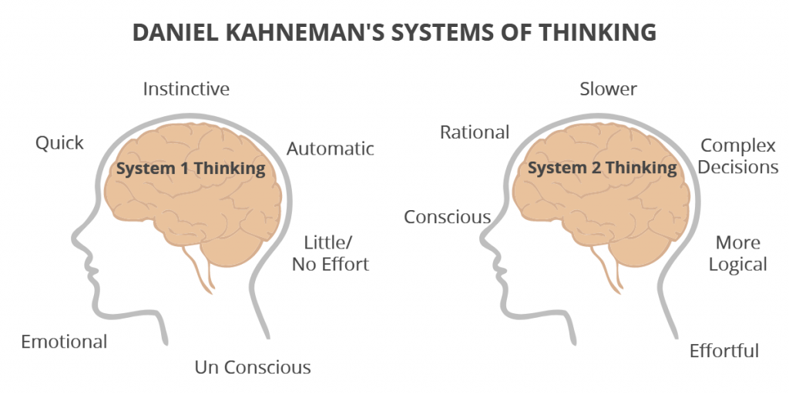

Geleerde activiteiten uitvoeren is eenvoudig. Nieuwe dingen uitvoeren is moeilijk. Een mooi voorbeeld uit het boek is het alfabet opnoemen. Dat lukt iedereen wel. Maar wanner er wordt gevraagd om het anders om te noemen (van Z tot A), raken de meesten de kluts kwijt. Van A tot Z is eigenlijk een routine (automatisch). Dit gaat met weinig gedachte. Van Z tot A gaat natuurlijk wat meer gedachte in omdat het nieuw is. En toch, als het genoeg wordt herhaald, wordt het ook automatisch.

We vinden het af en toe leuk om onszelf uit te dagen met puzzels en radzels, maar dat wordt niet altijd als fijn ervaren bij taken uitvoeren.
Bealngrijke punten uit het boek:
- Prominently indicate system status and users’ progress toward their goal.
- Guide users toward their goals
- Tell users explicitly and exactly what they need to know.
- Don’t make users diagnose system problems
- Minimize the number and complexity of settings.
- Let people use perception rather than calculation
- Make the system familiar.
- Let the computer do the math.
Groepsopdracht:
Deze week moest ons groepje een wetenschappelijk artikel presenteren. Daniel Kahneman was wat voorgekomen in het werkcollege, dus hebben we er voor gekozen om het over zijn theorie te houden.
In dit artikel door Daniel Kahneman zelf hebben we veel informatie gevonden:
De reden dat we het systeem 1 en 2 noemen is simpel: de bijnamen nemen minder ruimte in ons geheugen op dan bijvoorbeeld automatisch systeem. Hierdoor wordt het makkelijker te begrijpen.
Iedereen is zich enigszins bewust van het beperkte aandachtsvermogen en ons sociale gedrag houdt rekening met deze beperkingen. Wanneer de bestuurder van een auto bijvoorbeeld een vrachtwagen inhaalt op een smalle weg, stoppen volwassen passagiers heel verstandig met praten. Ze weten dat het afleiden van de chauffeur geen goed idee is, en ze vermoeden ook dat hij tijdelijk doof is en niet wil horen wat ze zeggen.
We hebben het volgende filmpje aan de klas laten zien: The Monkey Business Illusion.
Vele duizenden mensen hebben de video gezien en ongeveer de helft van hen merkt niets ongewoons op. Het is de telopdracht - en vooral de instructie om een van de teams te negeren - die de blindheid veroorzaakt. Niemand die de video bekijkt zonder die taak, zou de gorilla missen. Zien en oriënteren zijn automatische functies van Systeem 1, maar ze zijn afhankelijk van de toewijzing van enige aandacht aan de relevante stimulus. De kijkers die de gorilla niet zien, zijn er aanvankelijk zeker van dat hij er niet was - ze kunnen zich niet voorstellen dat ze zo'n opvallende gebeurtenis zouden missen. De gorillastudie illustreert twee belangrijke feiten over onze geest: we kunnen blind zijn voor het voor de hand liggende, en we zijn ook blind voor onze blindheid.
- Hoofdstuk 10, 11 en 12 van Designing with the Mind in Mind, Jeff Johnson
- Dit artikel, Of 2 Minds: How Fast and Slow Thinking Shape Perception and Choice
- Dit filmpje over the Invisible Monkey